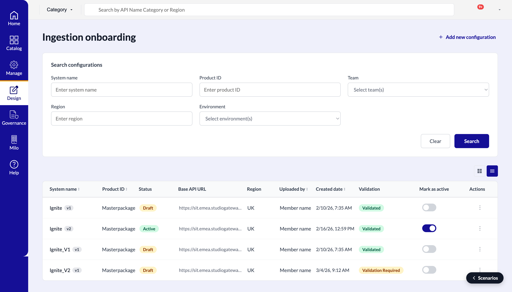
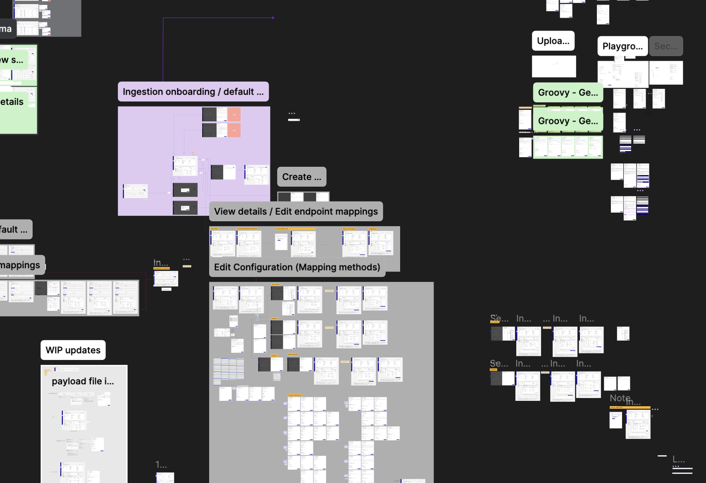
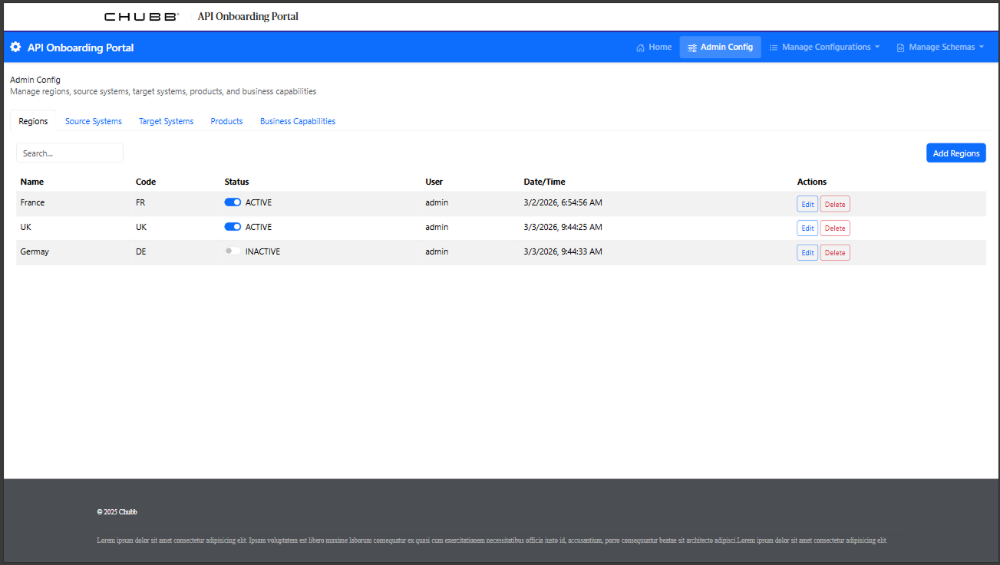

Designing Chubb's API Connect ingestion onboarding experience. A unified configuration interface with an AI-assisted expression builder that eliminates the manual effort of resolving field mismatches and rewriting transformation rules with every schema change.
View Prototype →
Role
Lead Designer
Timeline
8 weeks, 2026
Tools
Figma MCP, Claude Code, Surge
Impact
Automated field matching across pipelines
01 — Context & Challenge
Chubb's internal API Connect platform handles the ingestion of data from external sources into core systems. It is a critical, high-stakes process touching underwriting, compliance, and operations. The problem wasn't that people didn't know their jobs. It was that the jobs weren't designed to talk to each other.
Developers registered and tested ingestion configurations in non-production environments. Team owners reviewed schema mappings and approved production promotions. Global platform admins held governance oversight across everything. Three distinct roles, three different mental models of what the pipeline even looked like. The platform had a single onboarding flow that didn't account for any of them.
The real cost showed up at schema change time. When a source system updated its data structure, teams had to manually identify every broken field mapping, rewrite the transformation rules from scratch, and walk the whole approval chain again. Every change was a support ticket waiting to happen.
The problem wasn't complexity. The tool treated every user the same and punished them equally when something changed.
02 — My Role & Process
I led design for the ingestion onboarding configuration details page. This is the core screen where users define how a data source maps into Chubb's systems. The scope included the full configuration workflow: source schema selection, field mapping, transformation rule definition, and handoff to the approval chain.
The highest-friction moment in the existing experience was the expression builder. This is the interface where users defined transformation logic to normalize source fields into target schemas. It required writing rules manually, with no guidance, no validation feedback, and no memory of what had worked before. Developers who knew the platform well moved through it. Everyone else got stuck.
I designed an AI-assisted expression builder that surfaces suggested mappings based on field names, data types, and prior configurations. Instead of starting from a blank input, users see ranked suggestions they can accept, modify, or override. The interface explains its reasoning inline rather than buried in documentation, so team owners reviewing mappings can understand what they're approving.
I used Figma MCP to pull directly from the existing design system, ensuring every component matched the broader platform. Claude Code handled the interactive prototype, deployed to Surge for stakeholder review and async feedback.


03 — What I'd Do Differently
I designed the AI-assisted expression builder based on my understanding of the pain points, but I didn't validate it with developers until the prototype was already built. I would push for at least one round of concept testing before committing to the interaction model. This matters especially for a feature where the wrong suggestion is potentially worse than no suggestion at all.
I'd also push for clearer success criteria upfront. The brief described the goal as reducing manual effort, but "effort" wasn't defined or measured before we started. Having a baseline — even a rough one — would have made it easier to argue for scope and easier to evaluate the design once it shipped.
04 — Outcomes & Impact
The design is in development. Post-launch metrics aren't available yet, but the expected outcomes are grounded in the specific friction points the design addresses.